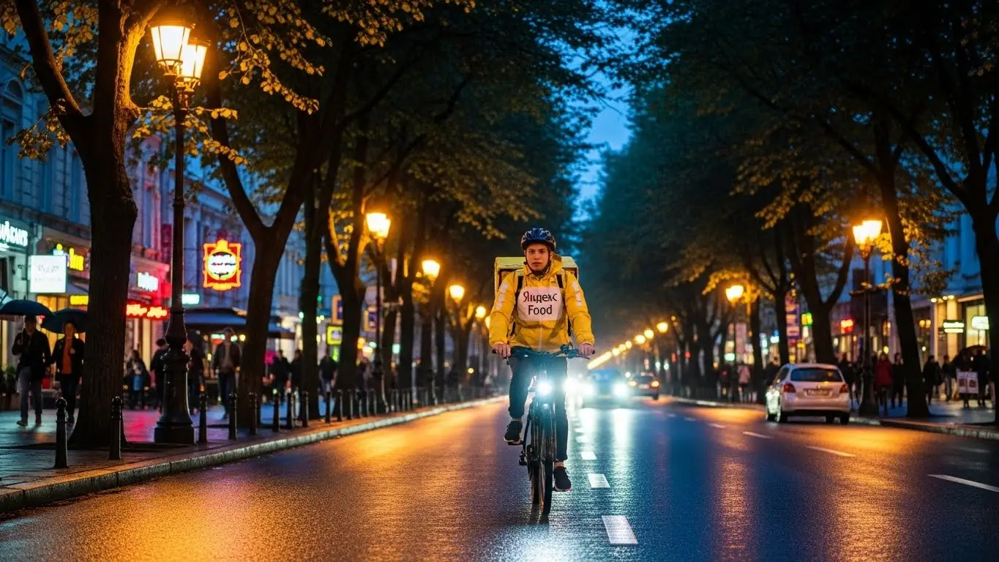

Доход курьера Яндекс Еды в Одинцово: разбор условий 2025-2026
- Работа курьером Яндекс Еды в Одинцово: для кого эта вакансия и что вы получите
- Сколько вы будете зарабатывать курьером в Одинцово: калькулятор дохода и разбор выплат
- Реальный заработок курьера в Одинцово: смены и месячный доход
- График работы и форматы занятости
- Требования к кандидату и документы
- Самозанятость, налоги и юридическая чистота
- Пошаговое оформление и первый выход на линию в Одинцово
- Пешком, на вело или на авто: что выгоднее в Одинцово
- Районы, маршруты и «топовые» зоны заказов в Одинцово
- Безопасность, страховка, штрафы и оплата простоя
- Плюсы и возможные минусы работы курьером в Одинцово
- Реальные истории и отзывы курьеров из Одинцово
- Ответы на главные вопросы о работе курьером Яндекс Еды в Одинцово
- Короткие ответы на главные вопросы
- Итоги и ваш следующий шаг
Все города
Думаешь, работа курьером в Одинцово — это просто крутить педали или руль, слушать музыку и получать лёгкие деньги? Видишь рекламу, где обещают свободный график и доход под сотню тысяч, и уже представляешь, как легко закроешь все свои финансовые вопросы? Давай без розовых очков. Я расскажу, как на самом деле устроена работа курьером Яндекс Еды и Лавки именно в нашем городе, где можно убить подвеску во дворах Новой Трёхгорки или простоять полчаса в мёртвой пробке на Можайке, доставляя остывшую пиццу.
Потому что Одинцово — не Москва, но и не тихий пригород. Здесь свои законы трафика, свои «жирные» по заказам районы и свои «мёртвые» часы. Твой реальный заработок — это не красивая цифра в приложении, а то, что останется после вычета бензина (или калорий), налога для самозанятого и мелкого ремонта. Большинство новичков здесь совершают одни и те же ошибки: слепо катаются по всему городу, жгут топливо впустую и не понимают, почему заказов мало, а денег ещё меньше, не зная, где и когда концентрируется спрос. Чтобы получить краткую сводку условий и сразу подать заявку, посмотрите актуальную информацию про работу курьером Яндекс Еда в Одинцово, где также есть подробный калькулятор дохода.
В этом гиде мы не будем лить воду. Мы честно разберём, на чём лучше работать в Одинцово — пешком, на велосипеде или авто, и какие у каждого способа есть подводные камни. Посчитаем, сколько реально можно положить в карман за смену в 4, 8 или 12 часов с учётом всех расходов. Выясним, в каких районах — от «Гусарской Баллады» до центра — платят больше, а куда лучше не соваться в час пик. Я покажу на примерах, как погода и вечные ремонты дорог влияют на твой доход, и расскажу, за что на самом деле штрафуют и как этого избежать.
Меня зовут Алексей. Я сам начинал с жёлтого рюкзака на улицах Одинцово, а сейчас у меня свой небольшой таксопарк-партнёр. Так что я знаю эту кухню с обеих сторон — и как крутить педали в минус десять, и как работает система изнутри. Хватит теории. Давай по порядку, сейчас всё разложу по полочкам, без рекламной шелухи.
Для начала — короткий гид по главным темам статьи, чтобы ты сразу нашёл то, что тебе важнее всего.
Что ты точно узнаешь из этого разбора
В этой статье ты ТОЧНО узнаешь:
- Сколько реально можно заработать в Одинцово за смену на авто, велосипеде или пешком?
- В каких районах Одинцово (от Новой Трехгорки до центра) больше всего заказов и выше коэффициенты?
- Что выгоднее для Одинцово — машина, велосипед или свои двое, и какие у каждого способа подводные камни?
- Как правильно выбирать слоты и время для работы, чтобы не стоять без дела и зарабатывать больше?
- За что на самом деле могут оштрафовать или понизить рейтинг, и как этого избежать?
- Почему нужно оформлять самозанятость, как это сделать за 10 минут и сколько платить налогов?
А если тебе некогда читать всю статью — переходи сразу к заключению, где ты найдёшь короткие ответы на все эти вопросы и указания, в каких разделах искать подробности.
А вот ключевые цифры и факты о работе в Одинцово в одной картинке.
Работа курьером в Одинцово: ключевые цифры
Работа курьером Яндекс Еды в Одинцово: для кого эта вакансия и что вы получите
Эта занятость — не для всех, но для многих она становится отличным решением. В Одинцово, как и в любом подмосковном городе, есть своя специфика, но суть работы курьером в Яндекс Еде остаётся прежней: это отличная подработка или основная занятость с возможностью получать деньги здесь и сейчас, не подстраиваясь под жёсткий офисный график. Если тебе нужны быстрые и честные выплаты, а сидеть на одном месте — не твоё, то это хороший вариант.
Здесь нет начальников, которые стоят над душой, и сложных требований на входе. Главное — твоё желание работать и наличие смартфона. Всё остальное — дело техники и привычки. Ты сам решаешь, когда выходить на линию, сколько заказов выполнять и в каком районе города работать — это и есть настоящий свободный график. Такая занятость может быть как основной работой, так и подработкой на несколько часов в день после учёбы.

Кому подойдёт эта работа в Одинцово
Давай по-честному, кому эта работа заходит лучше всего. Во-первых, студентам. Учиться в Одинцово или ездить в Москву — неважно, всегда можно выкроить 3–4 часа вечером или на выходных, чтобы заработать на свои расходы. График полностью гибкий, через приложение «Яндекс Про» сам выбираешь удобные слоты.
Во-вторых, тем, кому нужна подработка или дополнительный доход. Если у тебя есть основная работа со сменным графиком или просто нужны деньги, доставка — отличный вариант. Никаких долгих собеседований и стажировок, начать можно буквально на следующий день. Также это хороший старт для тех, у кого пока нет опыта работы — здесь на него не смотрят, поэтому устроиться может практически каждый. И, конечно, это отличная вакансия для водителей, которые хотят использовать свой автомобиль для заработка, не связываясь с такси.
Главные преимущества для жителей районов Новая Трехгорка, Гусарская Баллада, Одинцово-1
Ключевой плюс работы в Одинцово — возможность работать прямо у дома. Тебе не нужно тратить час-полтора на дорогу до Москвы, чтобы начать смену. Если ты живёшь, например, в Новой Трехгорке, ты можешь выбрать эту же локацию в приложении и доставлять заказы в своём районе. То же самое касается и жителей «Гусарской Баллады» или новых микрорайонов вроде «Одинцово-1».
Это огромное преимущество. Ты экономишь время, деньги на проезд и силы. Ты отлично знаешь свой район, все короткие пути, дворы и подъезды, что позволяет выполнять заказы быстрее и, соответственно, зарабатывать больше. В этих густонаселённых районах всегда много заказов из местных кафе, ресторанов и магазинов, так что без дела сидеть не придётся.
Краткое обещание по доходу и условиям
Если говорить о деньгах, то реальный доход курьера в Одинцово при частичной занятости (3–4 часа в день) составляет в среднем 1500–2500 рублей за смену. При полной занятости, работая по 8–10 часов, можно выходить на заработок в 3500–5000 рублей и выше. В месяц при полной загрузке вполне реально делать 80 000–95 000 рублей, особенно если работать на автомобиле и брать заказы в часы пик.
Главные условия работы, которые ты получаешь: свободный график, который сам составляешь в приложении, и ежедневные выплаты на карту как самозанятый. Отработал смену — получил деньги. Никакого ожидания зарплаты неделями. Начать можно без опыта, а для работы понадобится только желание, смартфон на Android и термокороб, который можно получить у партнёров сервиса.
Недавно ко мне в парк пришёл парень, студент из Одинцовского филиала МГИМО. Живёт в 8-м микрорайоне. Ему нужна была подработка, чтобы не просить у родителей на карманные расходы. Начал работать пешим курьером. Выходил на 4 часа после пар, с 18:00 до 22:00, как раз в самый пик заказов. Работал строго в своём и соседних микрорайонах, далеко не уходил. За первую неделю, работая 5 дней, он спокойно сделал себе около 10 000 рублей. Говорит, что и на фитнес ходить не надо, и деньги всегда есть.
В итоге, работа доставщиком в Одинцово — это в первую очередь гибкость и доступность. Она идеально подходит для тех, кто не хочет зависеть от строгого графика и нуждается в быстрых деньгах. Мой совет новичкам: не пытайтесь сразу охватить весь город, начните со своего района. Так вы быстрее освоитесь, поймёте механику и начнёте стабильно зарабатывать.
Сколько вы будете зарабатывать курьером в Одинцово: калькулятор дохода и разбор выплат
Многих волнует главный вопрос: сколько реально можно заработать? Фиксированной зарплаты здесь нет, твой итоговый доход — это сумма нескольких составляющих. Он напрямую зависит от того, как, где и когда ты работаешь. Понять свой потенциальный заработок можно с помощью калькулятора, но для начала важно разобраться, из чего вообще складываются выплаты.
Система оплаты в Яндекс Еде прозрачна. В приложении «Яндекс Про» ты всегда видишь, сколько стоит каждый конкретный заказ ещё до того, как его принять. Там же отображается вся статистика твоих доходов за день, неделю и месяц. Это позволяет планировать свои финансы и понимать, как можно заработать больше.
Из чего складывается доход курьера
Твой итоговый заработок за смену — это не просто плата за количество доставок. Он состоит из нескольких частей, которые суммируются.
- Оплата за заказ. Это базовая стоимость за то, что ты забираешь и доставляешь заказ.
- Доплата за расстояние. Чем дальше нужно нести или везти заказ, тем больше доплата. Система считает каждый километр маршрута.
- Повышающие коэффициенты. В часы пик (обед, ужин), в плохую погоду (дождь, снег) или в зонах с высоким спросом на карте появляются фиолетовые и оранжевые зоны. Заказы из этих зон стоят дороже.
- Бонусы. Сервис часто предлагает персональные цели. Например, выполни 15 заказов за день и получи бонус 1000 рублей.
- Чаевые. Клиенты могут отблагодарить тебя через приложение. Вся сумма чаевых идёт тебе, сервис комиссию с них не берёт.
- Гарантия дохода (оплата простоя). Важный момент: если ты вышел на плановый слот, а заказов мало, сервис всё равно начислит минимальную оплату за час. Это твоя страховка — ты не останешься с нулём, даже если спрос временно упадёт.
Как пользоваться калькулятором дохода
На сайте для курьеров есть специальный калькулятор, который помогает прикинуть примерный доход. Пользоваться им просто. Сначала выбираешь свой город — Одинцово. Затем указываешь, как планируешь доставлять: как пеший курьер, велокурьер или на своём авто.
После этого двигаешь ползунки: сколько часов в день и сколько дней в неделю ты готов работать. Калькулятор мгновенно обрабатывает эти данные и показывает примерный диапазон твоего заработка за день и за месяц. Это не точная цифра до копейки, а прогноз, основанный на средних показателях по городу. Он помогает сориентироваться и понять, на какой доход можно рассчитывать при выбранной загрузке.
Калькулятор дохода курьера в Одинцово
* Расчёт основан на средней ставке для Одинцово и не учитывает бонусы, чаевые и повышающие коэффициенты в часы пик. Реальный доход может быть выше.
Чтобы увидеть более точные цифры и сразу подать заявку, посмотри актуальные условия на странице работа курьером Яндекс Еда в твоём городе — там есть подробный FAQ и форма для анкеты.
Примеры расчёта для пешего, вело- и авто‑курьера в Одинцово
Чтобы было понятнее, давай разберём на конкретных примерах для Одинцово.
- Пеший курьер. Допустим, ты работаешь 4 часа в день, 5 дней в неделю. В основном в центре, в районе станции Одинцово и улицы Маршала Неделина, где много кафе. Заказы короткие, но их много. В среднем за смену будет выходить 1800–2200 рублей. В месяц это около 36 000–44 000 рублей.
- Велокурьер. Ты работаешь по 6 часов в день, катаешься между спальными районами, например, из Новой Трехгорки в центр и обратно. На велосипеде ты быстрее, берёшь больше заказов на средние дистанции. Твой дневной заработок может составить 2800–3500 рублей. За месяц при графике 5/2 это уже 56 000–70 000 рублей.
- Водитель-курьер (на авто). Ты работаешь полную смену, 8–10 часов, и готов ездить по всему городу, включая дальние заказы в Лесной Городок или Власиху. В плохую погоду и вечерние часы твой доход резко растёт за счёт коэффициентов. За день можно спокойно заработать 4500–6000 рублей. В месяц такая зарплата может доходить до 100 000–120 000 рублей до вычета расходов на бензин.
У меня есть знакомый водитель-курьер, который работает только по выходным в Одинцово. В прошлую субботу был сильный ливень. Он вышел на линию в 12 дня. Сразу увидел, что весь город «горит» фиолетовым — коэффициенты были х1.5, а местами и х2. Он не стал брать короткие заказы по центру, а сосредоточился на доставках из гипермаркетов на окраинах в новые ЖК. За 10-часовую смену он сделал 22 заказа и его общий доход составил 6800 рублей. Из них около 1500 рублей — это были только доплаты за высокий спрос.
В общем, твой заработок в Яндекс Еде — это гибкая система. Не стоит смотреть только на базовую ставку за заказ. Главные деньги лежат в бонусах, коэффициентах и правильном выборе времени для работы. Мой совет: всегда следи за картой спроса в «Яндекс Про» и старайся выходить на линию, когда город «горит». Это самый простой способ увеличить свой доход в полтора-два раза без дополнительных усилий.
Реальный заработок курьера в Одинцово: смены и месячный доход
Диапазон дохода для подработки и полной занятости
Давай сразу к главному — к деньгам. Без красивых обещаний, только реальные цифры о том, сколько зарабатывает курьер в Одинцово. Если ты ищешь подработку на 2–4 часа в день, чтобы закрыть мелкие расходы или кредит, то ориентируйся на следующие цифры.
Пеший курьер или на велосипеде за такую короткую смену в будний вечер может сделать 800–1500 рублей. На своей машине за то же время выйдет побольше, в районе 1200–2000 рублей, так как сможешь брать более дальние и дорогие заказы. В месяц такая подработка приносит 20–35 тысяч рублей, если не пропускать смены.
Если же ты рассматриваешь эту работу как основную, на полной занятости по 8–10 часов в день, то доход совсем другой. Пеший или велокурьер при полной загрузке в Одинцово стабильно зарабатывает 2500–4000 рублей за смену. Автокурьер — от 4000 до 6000 рублей и выше, особенно если работать в пиковые часы и выходные. В месяц у самых активных ребят на авто выходит и 80 000, и 100 000 рублей. Но это не лёгкие деньги, а полноценная работа, где нужно понимать, где и когда быть, чтобы не стоять без дела.
Как район, время суток и погода влияют на доход
Запомни три кита, на которых держится твой заработок: место, время и погода. В Одинцово, как и везде, есть часы пик: обед с 12:00 до 14:00 и вечер с 18:00 до 21:00. В это время заказов вал, и включаются повышающие коэффициенты — карта в приложении «Яндекс Про» окрашивается в фиолетовый цвет. Это значит, что за каждый заказ ты получишь больше денег. Выходные, особенно вечера пятницы и субботы, — это один сплошной пик.
Погода — твой лучший друг, если ты к ней готов. Как только начинается дождь, сильный снег или жара под 30 градусов, большинство курьеров предпочитают отсидеться дома. А вот количество заказов, наоборот, взлетает до небес — люди не хотят выходить на улицу. Коэффициенты в этот момент максимальные. Плюс, клиенты в плохую погоду становятся щедрее на чаевые, потому что ценят твой труд. Так что хороший дождевик, вместительный термокороб и кондиционер в машине — это прямая инвестиция в твой доход.
Советы по увеличению заработка от опытных курьеров
Чтобы не просто работать, а именно зарабатывать, нужно подходить к делу с головой. Во-первых, планируй свои смены. Заранее бронируй в приложении плановые слоты на самое выгодное время — вечера и выходные. Они разбираются быстро. Во-вторых, изучи карту Одинцово в «Яндекс Про». Не сиди на одном месте, если видишь, что соседний район «горит» фиолетовым. Основные точки притяжения заказов — это зоны вокруг ТРЦ «Атлас» и «Союзный», а также густонаселённые микрорайоны вроде «Новой Трехгорки» или «Гусарской баллады».
Не зацикливайся на одном типе доставки, если есть возможность. Например, в хорошую погоду по центру Одинцово и спальным районам быстрее и выгоднее передвигаться на велосипеде — нет проблем с пробками и парковкой. А когда нужно везти крупный заказ или работать в ливень, машина становится незаменимой. И главный совет — следи за своим рейтингом. Вежливость с клиентами, опрятный вид и своевременная доставка напрямую влияют на твой приоритет в распределении заказов. Чем выше рейтинг, тем больше хороших заказов ты получаешь.
Вот тебе реальный кейс. Парень у нас в парке, студент, начинал на велосипеде. Сначала катался хаотично, зарабатывал средненько. Потом стал анализировать: заметил, что в дождливую субботу в районе «Одинцово-1» коэффициенты максимальные. Купил себе непромокаемую одежду и стал целенаправленно выходить в плохую погоду. За одну такую 8-часовую смену в ливень он сделал почти 5000 рублей, включая щедрые чаевые. Это почти вдвое больше, чем в обычный солнечный день.
Сравнение дохода в Одинцово по форматам занятости
| Формат занятости | Пеший/Велокурьер (средний доход в месяц) | Автокурьер (средний доход в месяц) |
|---|---|---|
| Подработка (2–4 часа/день, 5 дней/нед.) | 20 000 – 35 000 ₽ | 25 000 – 45 000 ₽ |
| Полная занятость (8–10 часов/день, 5 дней/нед.) | 55 000 – 80 000 ₽ | 80 000 – 120 000 ₽ |
В сухом остатке: твой заработок курьером в Одинцово напрямую зависит от твоего подхода. Можно просто выполнять заказы, а можно анализировать спрос, погоду и время, чтобы быть в нужном месте в нужный час. Советую с самого начала относиться к этому как к своему небольшому бизнесу: изучай спрос, инвестируй в экипировку и работай над репутацией (рейтингом).
График работы и форматы занятости
Подработка после учёбы или основной работы
Гибкий график — это не просто слова, а реальный инструмент. Многие начинают именно с подработки, и это самый разумный путь. Например, у тебя основная работа в офисе до шести вечера. Ты можешь спокойно приехать домой, поужинать и в 19:00 выйти на линию на своей машине на 3-4 часа. Как раз попадёшь на самый пик вечерних заказов. Работая курьером в таком режиме 4-5 дней в неделю, можно легко добавлять к основной зарплате 25-30 тысяч рублей в месяц. Этого хватит, чтобы покрыть расходы на машину или отложить на отпуск.
Другой пример — студенты. Учишься в Одинцовском филиале МГИМО или любом другом колледже. Пары заканчиваются в обед или после обеда. Берёшь велосипед или просто выходишь пешком и работаешь 4 часа. В будни это 1000–1500 рублей, а в субботу можно взять полную смену на 8 часов и заработать 3000–3500 рублей. За неделю набегает 8–10 тысяч. Это отличные деньги на карманные расходы, которые ты зарабатываешь в удобное для себя время, не забивая на учёбу. Главное — ты сам себе начальник и решаешь, когда работать, а когда готовиться к экзаменам.
Полная занятость: как выглядит типичный день курьера
Если ты решил работать полный день, твой график будет более структурированным, но всё равно гибким. Типичный день автокурьера в Одинцово выглядит примерно так. Выход на линию около 10:00–11:00 утра, чтобы захватить пред-обеденные заказы из магазинов. С 12:00 до 15:00 — обеденный пик, работа без остановок, в основном доставка еды из ресторанов и кафе (заказы Яндекс Еды) в районе Можайского шоссе и центра города.
После 15:00 наступает небольшое затишье. Это лучшее время, чтобы сделать перерыв, пообедать самому и заправить машину. Часам к 17:00 спрос снова начинает расти. В это время имеет смысл сместиться в сторону крупных жилых комплексов, таких как «Сколковский» или «Одинбург», потому что люди возвращаются с работы и начинают заказывать ужины (Яндекс Еда) и продукты (Яндекс Лавка). С 18:00 до 21:00 — второй, самый мощный пик. Заказы идут один за другим. После 21:00 спрос падает, можно спокойно завершать смену, выполнив ещё пару заказов по пути домой.
Как планировать слоты и выходы через приложение «Яндекс Про»
«Яндекс Про» — твой главный рабочий инструмент. В нём ты не только видишь заказы, но и планируешь своё время. Есть два основных режима: свободный выход и плановые слоты. Свободный выход — это когда ты просто нажимаешь кнопку «На линию» в любой момент и начинаешь работать. Удобно для коротких подработок, но в часы низкого спроса можно просидеть без заказов.
Плановые слоты — твой ключ к стабильному доходу. Ты заранее заходишь в раздел «Расписание» и выбираешь временные интервалы и зоны в Одинцово, в которых хочешь работать. За такие слоты часто начисляются бонусы, а главное — действует минимальная гарантированная оплата, даже если заказов будет мало. Но тут важна дисциплина: на слот нельзя опаздывать. Если опоздаешь или не выйдешь, твой показатель «Активность» снизится, а это может повлиять на доступ к заказам и бонусам в будущем. Поэтому планируй слоты ответственно и бронируй самые «жирные» (вечера пятницы, субботы и воскресенья) заранее, как только они появляются в расписании.
Вот тебе случай из жизни. Один из моих водителей, новичок, постоянно жаловался на нехватку заказов. Работал он в свободном режиме, выходил когда придётся. Я зашёл с ним в его «Яндекс Про» и показал, как планировать слоты. Мы забронировали ему на неделю вперёд несколько вечерних слотов в зоне с высоким спросом. Его средний дневной заработок тут же вырос почти в полтора раза, потому что он перестал стоять в ожидании и начал получать заказы по гарантированной ставке.
Подводя итог: график работы курьером в сервисах Яндекса действительно гибкий, но чтобы он работал на тебя, им нужно управлять. Используй плановые слоты для стабильности, а свободные выходы — для спонтанных подработок. Советую новичкам начинать именно с плановых слотов, чтобы быстрее понять ритм работы и гарантированно получать доход с первых дней.
Требования к кандидату и документы
Многие думают, что для работы курьером в Яндекс Еде нужны особые навыки или стопка бумаг. На деле всё гораздо проще. Условия работы максимально лояльные: забудь про резюме, собеседования и испытательные сроки. Главное — твоя ответственность, наличие смартфона на Android и желание зарабатывать. Система упрощена, чтобы ты мог начать работу без опыта, выйти на линию и получить первые деньги как можно быстрее.
Требования к курьерам в Яндекс Еде действительно лояльные. Был случай с парнем, который пришёл устраиваться в мой таксопарк, но для такси стажа не хватало. Он был уверен, что и в доставку его не возьмут, так как официального опыта работы у него не было. Я объяснил, что для этой подработки опыт не важен. Помог ему заполнить анкету, он прошёл короткое онлайн-обучение, и уже на следующий день вышел на первую смену в районе «Новой Трёхгорки». За 4 часа заработал свои первые 1500 рублей и был абсолютно счастлив.
Возраст, гражданство и базовые условия
Давай по порядку разберёмся, что от тебя потребуется. Условия простые, но есть важные моменты, особенно по возрасту.
Возраст. Работать пешим курьером или велокурьером в Одинцово можно с 16 лет. Это отличный вариант подработки для старшеклассников и студентов. Единственное условие — понадобится письменное согласие от родителей или опекунов. Плюс, по закону, у тебя будет сокращённый рабочий день, без ночных смен. А вот если планируешь стать водителем-курьером на своём авто, то тут строгие требования — только с 18 лет и при наличии водительских прав.
Гражданство и физформа. Сервис работает с гражданами Российской Федерации, а также стран ЕАЭС — это Армения, Беларусь, Казахстан и Кыргызстан. Что касается физической формы, то олимпийских рекордов не ждут. Если ты можешь без проблем ходить несколько часов или проехать на велосипеде по городу, этого вполне достаточно. Главное — быть активным и выносливым.
Какие документы нужны для работы курьером
Чтобы всё было официально и без проволочек, заранее подготовь небольшой пакет документов. Это займёт минимум времени, зато потом не придётся отвлекаться.
Вот какие документы нужны для оформления:
- Паспорт. Твой главный документ для подтверждения личности и возраста. Граждане стран ЕАЭС могут использовать свой национальный паспорт.
- ИНН. Индивидуальный номер налогоплательщика. Он нужен для оформления самозанятости. Если не помнишь свой номер, его легко найти за пару минут на сайте налоговой службы.
- Банковская карта. Подойдёт карта любого российского банка, оформленная на твоё имя. Именно на неё будут приходить выплаты.
- Медицинская книжка. Она нужна не всегда, но я настоятельно рекомендую её сделать. Без неё ты не сможешь брать заказы из многих ресторанов, а значит, будешь терять в доходе. Оформить медкнижку можно в любом лицензированном медцентре в Одинцово.
- Для автокурьеров: водительское удостоверение (ВУ) и свидетельство о регистрации транспортного средства (СТС).
Для ребят 16–17 лет к этому списку добавляется ещё один пункт — письменное согласие от родителей. Это простая формальность, но без неё начать работу не получится.
Можно ли работать с 16 лет и какие есть альтернативы
Да, ещё раз подтверждаю: стать курьером в Яндекс Еде в Одинцово можно с 16 лет, доставляя заказы пешком или на велосипеде. Это один из лучших вариантов подработки для молодых и активных ребят, который позволяет совмещать с учёбой и иметь свои карманные деньги.
Важно понимать, что работа несовершеннолетних регулируется Трудовым кодексом РФ. Это значит, что ты не сможешь работать по 8-10 часов, как взрослые курьеры. Твои смены будут короче и не могут быть в ночное время. Но даже за 3–4 часа в день после учёбы или на каникулах можно заработать неплохую сумму.
Если по какой-то причине родители не дают согласие, альтернативы, конечно, есть: раздача листовок, работа промоутером. Но, на мой взгляд, это менее интересно, и доход там, как правило, ниже и не такой стабильный.
Сравнение требований по возрасту
| Параметр | 16–17 лет | 18+ лет |
|---|---|---|
| Тип доставки | Пеший, велокурьер | Пеший, велокурьер, автокурьер |
| Ключевой документ | Паспорт + письменное согласие родителей | Паспорт |
| График работы | Ограничен по ТК РФ (укороченный день, без ночных смен) | Без ограничений (в рамках доступных слотов) |
| Оформление | Самозанятость (с согласия родителей) | Самозанятость |
Как видишь, требования к кандидатам очень простые и понятные. Главное — соответствовать возрастным ограничениям и подготовить нужные документы. Мой совет: если для работы нужна медкнижка, не тяни с её оформлением. Так ты сразу откроешь себе доступ ко всем заказам и сможешь зарабатывать больше.
Самозанятость, налоги и юридическая чистота
Многих новичков пугает слово «самозанятость» и всё, что связано с налогами. Кажется, что это сложно, муторно и «не для простых людей». На самом деле, это самый простой и легальный способ сотрудничать с крупными сервисами вроде Яндекса. Вся система создана так, чтобы ты тратил на оформление минимум времени и нервов, а занимался главным — работой и заработком.
Ко мне в парк как-то пришёл работать водителем парень, который до этого мотался по «серым» шабашкам. Когда я сказал, что для работы с Яндексом нужно оформить самозанятость, он чуть не сбежал. Думал, это декларации, очереди в налоговой и прочая бюрократия. Я прямо при нём достал телефон, скачал приложение «Мой налог» и за 10 минут зарегистрировал его. Он смотрел на это круглыми глазами. А когда через месяц ему пришёл налог, который он оплатил одной кнопкой, парень окончательно понял, что бояться было нечего. Зато теперь у него официальный доход, и он спокойно взял себе телефон в кредит.
Почему курьеры Яндекс Еды работают как самозанятые
Работа через самозанятость (официально — «Налог на профессиональный доход» или НПД) — это прямой договор между тобой и сервисом. Такой формат выгоден и тебе, и Яндексу. Ты не числишься в штате, поэтому получаешь свободный график, а сервис легально выплачивает тебе вознаграждение.
Вот главные плюсы этого формата:
- Официальный доход. Все твои заработки — «белые». Это значит, что ты можешь, например, получить справку о доходах для банка, чтобы взять кредит или ипотеку.
- Никакой сложной бухгалтерии. Тебе не нужно вести учёт, заполнять декларации и нанимать бухгалтера. Всё происходит автоматически.
- Простая отчётность. Яндекс сам передаёт данные о твоих доходах в налоговую. Тебе остаётся только раз в месяц оплатить налог.
- Легальность и безопасность. Ты работаешь в рамках закона, спишь спокойно и не боишься никаких проверок.
По сути, самозанятость — это самый честный и прозрачный формат сотрудничества, который защищает и тебя, и компанию.
Как за 10 минут оформить самозанятость через «Мой налог»
Процесс регистрации элементарный и занимает не больше 10 минут. Всё делается онлайн через смартфон, никуда ходить не нужно.
Вот пошаговая инструкция для оформления через «Мой налог»:
- Скачай приложение. Найди в Google Play или App Store официальное приложение ФНС России — «Мой налог».
- Начни регистрацию. Открой приложение и выбери самый простой способ — «По паспорту РФ».
- Отсканируй паспорт. Наведи камеру на главный разворот паспорта. Приложение само распознает все данные. Проверь, чтобы всё было верно.
- Сделай селфи. Приложение попросит сделать фото, чтобы подтвердить твою личность. Просто моргни на камеру.
- Подтверди регистрацию. Выбери свой регион (Московская область) и отправь заявку. Обычно подтверждение приходит в течение нескольких минут.
Всё, ты — самозанятый. Также можно зарегистрироваться через приложения некоторых банков, например, Сбербанк Онлайн или Тинькофф, если ты их клиент. Это может быть ещё быстрее.
Сколько и как платить налоги
Теперь самое главное — деньги. Ставка налога для самозанятых курьеров, работающих с юридическими лицами (а Яндекс — это юрлицо), составляет 6% от дохода. Не 13%, как НДФЛ при работе в штате, а именно 6%.
Процесс оплаты тоже максимально автоматизирован:
- Каждый раз, когда Яндекс переводит тебе выплаты за выполненные заказы, информация об этом доходе автоматически поступает в налоговую.
- До 12-го числа каждого месяца в приложении «Мой налог» формируется квитанция на уплату налога за предыдущий месяц.
- Тебе приходит уведомление. Ты заходишь в приложение и видишь итоговую сумму.
- Оплатить налог нужно до 28-го числа. Это можно сделать прямо в приложении, привязав банковскую карту. Нажал одну кнопку — и готово.
Работать так гораздо проще и безопаснее, чем получать «серый» кэш. Ты платишь небольшой, честный налог и взамен получаешь официальный статус, спокойствие и доступ к финансовым продуктам, которые недоступны тем, кто работает неофициально.
В итоге, самозанятость — это не проблема, а удобный инструмент. Она делает твою работу курьером полностью легальной и прозрачной, не требуя от тебя никаких сложных действий. Мой совет: не бойся этого, разберись один раз — это займёт полчаса — и работай спокойно, зная, что у тебя всё официально.
Пошаговое оформление и первый выход на линию в Одинцово
Многих новичков, особенно тех, кто ищет работу без опыта, пугает процесс оформления. Кажется, что это долго, сложно и потребует кучи бумаг. На деле всё устроено так, чтобы ты мог начать зарабатывать как можно быстрее, часто в тот же день. Вся система регистрации и обучения проходит онлайн, без поездок в офис. Главное — иметь под рукой смартфон и необходимые документы. Весь путь от заполнения анкеты до первого заказа в Яндекс Доставке или Яндекс Еде занимает всего несколько часов.
Шаг 1–2: анкета и онлайн‑обучение
Первый этап — простая анкета на сайте. Никаких вопросов про твой предыдущий опыт или образование там нет, поэтому это отличный вариант для старта карьеры. Понадобятся базовые данные: ФИО, дата рождения, номер телефона. Также нужно будет загрузить фото основных документов — обычно это паспорт и ИНН. Это стандартные требования для оформления. После проверки анкеты, которая занимает от 15 минут до пары часов, тебе откроется доступ к короткому онлайн-обучению.
Обучение — это не скучные лекции, а несколько коротких видео и тестов прямо в приложении. Тебе расскажут, как пользоваться платформой «Яндекс Про», принимать и выполнять заказы, общаться с клиентами и службой поддержки. Особое внимание уделяется правилам безопасности и стандартам сервиса. Проходишь тесты, и система видит, что ты готов к работе. Весь процесс занимает не больше часа, и его можно пройти, не вставая с дивана.
Шаг 3: получение сумки и доступа к заказам в Одинцово
После успешного обучения остаётся последний шаг — получить фирменную экипировку. В первую очередь это термосумка для пеших и велокурьеров или термокороб для тех, кто работает на авто. Без неё система не даст доступ к заказам из ресторанов и магазинов Яндекс Еды. В Одинцово есть несколько способов её получить: забрать в центре для курьеров, в офисе партнёра или заказать доставку на дом.
Конкретные адреса и доступные варианты всегда отображаются в приложении «Яндекс Про» после обучения. Не нужно ничего искать заранее — система сама подскажет ближайшую точку. Как только ты заберёшь сумку и активируешь её в приложении, тебе сразу откроется доступ к заказам в Одинцово.
Шаг 4: первый слот и первый доход
Теперь всё готово к работе. Ты открываешь «Яндекс Про», видишь карту города с доступными зонами и выбираешь свой первый слот. Свободный график — одно из главных преимуществ: можно выбирать удобные отрезки времени, например с 18:00 до 22:00. Новичкам я всегда советую начинать со своего района, где знаешь каждый двор. Так будет спокойнее и проще выполнить первые заказы.
Выходишь на линию, и приложение начинает предлагать заказы поблизости. Принимаешь первый, доставляешь, и деньги сразу поступают на твой баланс. Сервис предлагает ежедневные выплаты: заработок можно вывести на карту в тот же день. Так что от момента, когда ты решил стать курьером, до первого реального дохода может пройти всего несколько часов.
Расскажу про парня-студента из Одинцово, который искал подработку и недавно подключался через мой парк. Он заполнил анкету утром, пока ехал в универ. Днём между парами прошёл обучение. После учёбы заехал в наш офис-партнёр на Можайском шоссе, забрал сумку. В 19:00 он уже вышел на свой первый 4-часовой слот в районе «Новой Трехгорки». За вечер спокойно сделал 8 заказов и заработал первые 1400 рублей, включая чаевые. Был доволен, что всё оказалось так быстро и легко совмещается с учёбой.
В итоге, весь процесс оформления устроен максимально просто: анкета, быстрое обучение, получение сумки и выход на линию. Никакой бюрократии и долгих ожиданий. Мой совет: перед заполнением анкеты подготовь и сфотографируй паспорт и ИНН. Это сэкономит тебе время и позволит ещё быстрее получить доступ к заказам.
Пешком, на вело или на авто: что выгоднее в Одинцово
Выбор транспорта — ключевой момент, который определяет твой потенциальный доход, усталость и типы заказов. В Одинцово, в отличие от центра Москвы, у каждого формата есть свои чёткие преимущества и зоны, где он работает лучше всего. Неправильный выбор может привести к тому, что ты будешь больше стоять в пробках или таскать тяжёлые заказы пешком, теряя время и деньги. Поэтому стоит заранее подумать, какой формат подходит именно тебе и для каких районов города.
Пеший курьер: для центра и плотной застройки в Одинцово
Пеший курьер — идеальный формат для центральной части Одинцово и густонаселённых жилых комплексов. Например, в районе центральной площади, улиц Маршала Неделина и Молодёжной, где много кафе и ресторанов, откуда поступают заказы Яндекс Еды. Здесь доставки часто идут на короткие расстояния, буквально в соседний дом или квартал. На машине там не развернёшься из-за плотного трафика и проблем с парковкой, а пешком можно срезать через дворы и принести заказ быстрее.
Также пеший формат отлично подходит для новых микрорайонов, таких как 8-й или 9-й, где много высоток и запутанная нумерация домов. Пока водитель ищет, где припарковаться и как подъехать к нужному подъезду, пеший курьер уже отдаёт заказ клиенту. Да, зарплата здесь может быть не самой высокой, но за счёт плотности коротких доставок можно делать стабильный доход без расходов на транспорт.
Велокурьер: быстрые доставки между спальными районами
Велокурьер в Одинцово — это золотая середина. Велосипед даёт скорость и манёвренность, позволяя легко объезжать пробки на Можайском и Красногорском шоссе. Это идеальный вариант для работы в больших спальных районах и между ними. Например, маршруты между микрорайонами Новая Трехгорка и Одинцово-1 — на велосипеде их можно покрывать гораздо быстрее, чем на машине или общественном транспорте, особенно в час пик.
Курьер на велосипеде берёт заказы на 2–5 км, которые уже невыгодны пешему, но ещё не требуют машины. Плюс это отличный способ поддерживать себя в форме — по сути, оплачиваемый фитнес. Главное — трезво оценивать свои силы и погодные условия. В дождь или снегопад работать на велосипеде сложнее, но и коэффициенты на заказы в такую погоду обычно выше.
Водитель‑курьер: заказы по всему городу и пригороду Власиха, Лесной Городок, Дубки
Работа курьером на своем авто открывает доступ к самым денежным заказам. Это доставка на дальние расстояния, например, из одного конца Одинцово в другой, а также в пригороды: Власиха, Лесной Городок, Дубки, посёлки по Минскому шоссе. Такие заказы хорошо оплачиваются, и их практически невозможно выполнить на другом транспорте. Кроме того, водитель-курьер может брать крупные и тяжёлые заказы из гипермаркетов (Яндекс Маркет, Лавка), которые недоступны пешим и велокурьерам.
Особенно выгодно работать на авто в плохую погоду — дождь, снег, мороз. В это время количество пеших и велокурьеров на линии резко сокращается, а спрос на доставку растёт. Это приводит к высоким коэффициентам, и за несколько часов можно заработать как за целый день в хорошую погоду. Конечно, есть расходы на бензин и амортизацию, но при грамотном подходе высокий доход их с лихвой окупает.
Сравнение форматов доставки в Одинцово
| Параметр | Пеший курьер | Велокурьер | Водитель-курьер |
|---|---|---|---|
| Радиус доставки | 1–2 км | 2–5 км | 5+ км, весь город и пригород |
| Лучшие зоны | Центр, плотные ЖК (8-й мкрн) | Спальные районы (Новая Трехгорка, Одинцово-1) | Весь город, пригороды, заказы из ТЦ |
| Зависимость от погоды | Средняя | Высокая | Низкая |
| Расходы | Минимальные (проезд) | Обслуживание велосипеда | Бензин, амортизация, страховка |
| Потенциал дохода | Стабильный, но ограниченный | Выше среднего, зависит от выносливости | Самый высокий, особенно в пики |
У меня есть водитель-курьер в парке, который использует работу в Яндекс Доставке как подработку на своей машине по вечерам и в выходные. Его стратегия проста: он выходит на линию в пятницу вечером, особенно если погода портится. В это время много заказов в пригородные посёлки и дачи. За один такой вечер, работая 4-5 часов, его зарплата составляет 3500–5000 рублей чистыми. Он выполняет 3–4 дальних и дорогих заказа, которые пешему курьеру просто не поднять.
В итоге, для Одинцово нет одного универсального ответа. Выбор зависит от твоих целей и возможностей. Пеший курьер — для старта и работы в центре, велокурьер — для скорости в спальниках, курьер на автомобиле — для максимального заработка по всему району. Мой совет: если есть возможность, комбинируй. Например, в хорошую погоду днём можно кататься на велосипеде, а для вечерних смен или в дождь использовать автомобиль. Это позволит брать самые выгодные заказы в любой ситуации.
Районы, маршруты и «топовые» зоны заказов в Одинцово
Чтобы не кататься вхолостую, а стабильно зарабатывать, нужно понимать карту своего города. Одинцово — город компактный, но со своими «точками притяжения», где заказы есть почти всегда. Главное правило простое: высокий доход там, где люди едят, отдыхают и работают. Поэтому твоя основная задача — быть в нужное время в нужном месте.
Со временем ты начнёшь чувствовать город интуитивно, но для начала запомни основные зоны. Это крупные торговые центры, центральные улицы с кафе и ресторанами, а также густонаселённые жилые комплексы. Не стоит бояться выезжать чуть дальше центра — часто в спальных районах коэффициенты бывают выше из-за меньшего количества курьеров на линии.
Где больше всего заказов: ТРЦ, бизнес-центры и жилые массивы
Самые выгодные места в Одинцово — это, конечно, торговые центры. В обеденное время и по вечерам их фуд-корты работают на полную катушку, генерируя массу заказов для «Яндекс Еды». В первую очередь обрати внимание на ТРЦ «Атлас» на Говорова и ТЦ «Союзный» на Вокзальной. Здесь всегда много работы от ресторанов быстрого питания. В выходные и праздники тут настоящий ажиотаж.
Кроме ТЦ, стабильный поток заказов идёт из центра города — район вокруг администрации, улицы Маршала Жукова и Можайского шоссе. Здесь сосредоточены не только кафе, но и офисы, сотрудники которых регулярно заказывают обеды. Центральный парк и пешеходные зоны тоже создают спрос, особенно в хорошую погоду.
Работа в своём районе: примеры для популярных жилых кварталов
Многие думают, что для хорошего заработка нужно обязательно ехать в центр. Это не так. В Одинцово полно крупных жилых микрорайонов, где можно отлично работать, не уезжая далеко от дома. Например, Новая Трехгорка или 8-й микрорайон — это огромные кварталы, где живут тысячи семей. Вечером и в выходные отсюда идёт вал заказов из местных пиццерий, суши-баров и продуктовых магазинов.
Ещё один хороший пример — ЖК «Гусарская Баллада». Там своя инфраструктура, много кафе и магазинов, а жители активно пользуются доставкой. Работая в своём районе, ты экономишь время и топливо, а главное — отлично знаешь все дворы и подъезды. Это позволяет доставлять заказы быстрее, получать больше положительных отзывов и чаевых, что идеально подходит для формата подработки.
Как выбирать зоны и слоты в «Яндекс Про», чтобы не мотаться впустую
Приложение «Яндекс Про» — твой главный инструмент для планирования. Основное, на что нужно смотреть, — это карта спроса. Зоны, подсвеченные фиолетовым цветом, — это места, где заказов сейчас больше, чем свободных курьеров. За работу в таких зонах начисляется повышающий коэффициент, то есть за ту же самую доставку ты получишь больше денег.
Когда планируешь смену, старайся выбирать слоты в тех районах, где ожидается высокий спрос. Например, если берёшь вечерний слот в будний день, логично начать его в районе с большим количеством жилых домов, как Новая Трехгорка. Если работаешь днём — смещайся ближе к центру и торговым центрам. Не бери заказ, который уведёт тебя в «мёртвую» зону, откуда придётся долго и без заказов возвращаться. Лучше подождать 5–10 минут и получить заказ по своему району.
Вот недавний случай из практики. Парень-велокурьер начал вечерний слот в пятницу в центре Одинцово. За час сделал три коротких заказа и заработал около 600 рублей. Потом ему прилетел заказ в дальний микрорайон, почти на выезд из города. Он его взял, отвёз, а обратно ехал порожняком почти 40 минут. В итоге за второй час работы — всего один заказ и куча потраченного времени. Мораль: всегда оценивай, куда тебя приведёт следующий заказ, и не бойся пропускать невыгодные варианты, чтобы не терять в доходе.
В общем, главный секрет — анализировать карту в приложении и понимать, где в данный момент концентрируется спрос. Не гоняйся за каждым заказом, а выбирай те, что позволяют тебе оставаться в «горячей» зоне и выполнять доставки максимально эффективно.
Безопасность, страховка, штрафы и оплата простоя
Работа курьера, особенно на велосипеде или авто, связана с определёнными рисками. Ты постоянно в движении, на дороге, взаимодействуешь с разными людьми. Поэтому важно знать не только, как больше заработать, но и как работать безопасно. Яндекс со своей стороны обеспечивает неплохую защиту, но и от тебя требуется внимательность и соблюдение правил.
Главное, что нужно понимать: твоя безопасность — это твой приоритет. Никакой, даже самый дорогой заказ, не стоит твоего здоровья. Поэтому не нужно гнать на пределе возможностей, нарушать ПДД или конфликтовать с клиентами. В большинстве спорных ситуаций служба поддержки встанет на твою сторону, если ты действовал адекватно и по инструкции.
Бесплатная страховка на сменах и что она покрывает
Один из самых важных плюсов в условиях работы с Яндексом — это бесплатная страховка жизни и здоровья, которая действует на всех активных слотах. Это не просто формальность, а реальная финансовая подушка на случай неприятностей. Страховая сумма покрытия — до 2 миллионов рублей.
Что это значит на практике? Если ты, не дай бог, попадёшь в ДТП, упадёшь с велосипеда или получишь любую другую травму во время выполнения заказа, страховка покроет расходы на лечение. Сюда входят как мелкие травмы вроде переломов, так и более серьёзные случаи. Чтобы страховка сработала, нужно сразу же сообщить о происшествии в службу поддержки через «Яндекс Про» и следовать их инструкциям. Это даёт уверенность, что в сложной ситуации ты не останешься один на один с проблемой.
Правила безопасности на дороге и при доставке
Базовые правила безопасности — это то, что должно быть у тебя в крови. Если ты пеший курьер, всегда переходи дорогу по пешеходному переходу и смотри по сторонам, даже на зелёный свет. В тёмное время суток носи одежду со светоотражающими элементами — так ты будешь заметнее для водителей.
Для велокурьеров главное — исправный велосипед. Перед каждой сменой проверяй тормоза и давление в шинах. Обязательно используй фонари и светоотражатели. На дороге веди себя предсказуемо, не делай резких манёвров. Водителям-курьерам советую не лихачить, даже если опаздываешь. Лучше позвонить клиенту и предупредить о задержке, чем рисковать аварией. В плохую погоду — дождь или гололёд — снижай скорость вдвое.
При передаче заказа тоже есть свои нюансы. Всегда проверяй комплектность, особенно если в заказе есть напитки. Термокороб держи ровно, чтобы ничего не пролилось. Если заказ оплачивается наличными, заранее подготовь сдачу и внимательно пересчитывай деньги.
Какие бывают штрафы и как их избежать
Многих новичков пугает слово «штрафы». На самом деле, система работает скорее как рейтинг. Серьёзные денежные штрафы — это редкость, и применяются они за действительно грубые нарушения. Чаще всего за мелкие проступки тебе могут временно понизить приоритет в распределении заказов. Избежать этого просто: нужно работать добросовестно.
Основные причины санкций: регулярные опоздания на доставку без уважительной причины, порча заказа (например, привезти помятую пиццу или пролитый суп), грубость в общении с клиентом или сотрудником ресторана, а также отмена уже принятого заказа без веской причины. Чтобы этого не допускать, просто следуй здравому смыслу: общайся со всеми вежливо, обращайся с заказами аккуратно, а если понимаешь, что опаздываешь из-за пробки или долгого ожидания в ресторане — сообщи об этом в поддержку.
Что такое оплата простоя и как она защищает ваш доход
Это одна из ключевых фишек, которая выгодно отличает Яндекс от многих других сервисов. Оплата простоя — это гарантия минимального заработка, даже если заказов временно нет. Работает это на плановых слотах. Если ты вышел на смену, находишься в указанной зоне и готов принимать заказы, но их нет, сервис всё равно начисляет тебе деньги за это время.
Сумма, конечно, не такая большая, как при активной работе, но она защищает тебя от ситуаций, когда ты можешь прокататься несколько часов и не заработать ни копейки. Это особенно важно в «тихие» часы, например, днём в середине буднего дня. Такая система показывает, что сервис ценит твоё время и даёт определённую стабильность, которой нет у курьеров, работающих на чистой сдельщине.
Был у меня случай с одним водителем-курьером. Он взял утренний слот в понедельник в спальном районе, где спрос был невысокий. За первые полтора часа ему упал всего один заказ. Он уже начал нервничать, но по итогу смены увидел в отчёте доплату за время, когда он был на линии, но без заказов. В итоге его доход за час всё равно получился вполне приемлемым.
В итоге, твоя финансовая безопасность складывается из нескольких факторов: бесплатная страховка, которая защищает от форс-мажоров, и оплата простоя, которая сглаживает колебания спроса. Главный совет — работай по правилам, будь вежлив и аккуратен, и тогда никаких проблем со штрафами и рейтингом у тебя не будет.
Плюсы и возможные минусы работы курьером в Одинцово
Любая работа — это не только деньги, но и свои особенности и условия. Курьерская доставка не исключение. Прежде чем ты скачаешь приложение и выйдешь на линию, давай честно разберём, что тебя ждёт в Одинцово. Я видел, как ребята загорались и быстро сдувались, а другие, наоборот, находили в этом деле стабильный источник дохода и даже удовольствие. Всё дело в ожиданиях и готовности к реалиям.
Сильные стороны работы курьером в Одинцово
Начнём с того, почему эта работа привлекает многих. Во-первых, это гибкий график. Ты сам решаешь, когда работать. Можно выходить на пару часов после основной работы или учёбы, а можно кататься полный день. Планируешь всё через приложение «Яндекс Про»: выбираешь удобные слоты и зоны, например, рядом с домом в Новой Трёхгорке или в центре у станции. Никаких начальников, стоящих над душой.
Во-вторых, ежедневные выплаты. Это, пожалуй, один из главных козырей. Заработал сегодня — получил деньги на карту сегодня или на следующий день. Не нужно ждать конца месяца, чтобы закрыть срочные расходы.
Кроме того, ты работаешь официально как самозанятый. Это одно из ключевых требований, но его легко выполнить: всё оформляется за 10 минут через телефон. Твой доход легален, налог для самозанятых всего 6% с поступлений от юрлиц. И не забывай про поддержку и страховку: на время смены твоя жизнь и здоровье застрахованы, а в любой непонятной ситуации на связи служба поддержки.
С какими сложностями чаще всего сталкиваются курьеры
Теперь о другой стороне медали. Первая и главная сложность — физическая нагрузка. Если ты пеший или велокурьер, будь готов много ходить или крутить педали. Особенно это чувствуется в районах с перепадами высот, как в некоторых частях Трёхгорки. Советую начинать с коротких смен по 3–4 часа и обязательно носить удобную обувь и одежду.
Вторая сложность — погода. Дождь, снегопад или жара в Одинцово — твои постоянные спутники. Хорошая экипировка, включая фирменную термосумку, решает половину проблем, но морально нужно быть готовым работать в любых условиях. С другой стороны, в плохую погоду всегда больше заказов и выше коэффициенты.
Третий момент — возможные простои. Бывают часы, когда заказов мало. Чтобы не стоять без дела, изучай карту спроса в «Яндекс Про». Обычно пики приходятся на обеденное время (12:00–15:00) и вечер (18:00–21:00), особенно в районах скопления офисов и жилых комплексов вдоль Можайского шоссе. Наконец, общение с клиентами. 99% людей адекватны, но иногда попадаются и недовольные. Главное правило — сохранять спокойствие, быть вежливым и в случае конфликта сразу писать в поддержку. Твоя задача — доставить заказ, а не вступать в споры.
Кому такая работа подходит, а кому лучше поискать другой формат
Давай начистоту. Эта работа идеально подходит, если ты студент и ищешь подработку с гибким графиком, чтобы совмещать с учёбой. Она для тех, кто ищет дополнительный доход к основной зарплате без опыта работы, выходя на линию по вечерам или выходным. Также это отличный вариант для активных людей, которые не могут сидеть в офисе и любят движение. Если у тебя есть машина, это хороший способ заставить её приносить деньги без сложностей работы в такси.
С другой стороны, если ты не переносишь физические нагрузки, ненавидишь выходить на улицу в плохую погоду и тебе нужен строго фиксированный оклад раз в месяц, то лучше поискать что-то другое. Эта работа не для тех, кто ждёт полного комфорта и предсказуемости. Она требует определённой самодисциплины, умения ориентироваться в городе и спокойно реагировать на разные ситуации. Если ты предпочитаешь стабильность офиса, курьерская работа может показаться слишком хаотичной.
Вот тебе живой пример. Парень у нас в парке, Андрей, работает велокурьером в Одинцово. Сначала он брал длинные смены по 8–10 часов и к концу недели был вымотан, хоть и зарабатывал по 3500–4000 рублей в день. Потом поменял тактику: стал выходить на два коротких слота по 4 часа в пики — обед и ужин. Работает в основном в центре, где заказы из Яндекс Еды короткие и их много. В итоге устаёт меньше, а доход за день остался почти тем же, иногда даже выше за счёт бонусов.
В общем, работа курьером в Одинцово — это реальный инструмент для заработка, если понимать её плюсы и минусы. Здесь можно получать хорошие деньги, но нужно быть готовым к определённым трудностям. Мой совет: начни с коротких смен в своём районе. Так ты поймёшь, подходит ли тебе такой формат, и не перегоришь в первую же неделю.
Реальные истории и отзывы курьеров из Одинцово
Теория — это хорошо, но лучше всего о работе говорят реальные отзывы сотрудников. Я собрал несколько коротких историй от курьеров из Одинцово, чтобы у тебя сложилась полная картина.
История студента Одинцовского филиала МГИМО, который совмещает учёбу и доставку
«Меня зовут Кирилл, мне 20 лет. Учусь на втором курсе, и времени на полноценную работу нет. Доставка стала для меня выходом. Живу в 8-м микрорайоне, поэтому в основном выбираю слоты здесь или в центре города. Обычно выхожу на 3–4 часа вечером после пар, где-то с 18:00 до 22:00, плюс беру одну длинную смену на 6–8 часов в субботу. Летом гоняю на велосипеде, зимой — пешком. В среднем за неделю выходит 8–10 тысяч рублей. Этих денег с головой хватает на личные расходы, чтобы не просить у родителей. Главный плюс для меня в работе курьером — ежедневные выплаты. Если срочно нужны деньги на что-то, я просто выхожу на дополнительную смену и на следующий день получаю заработок на карту».
Опыт автокурьера, который выходит в пиковые часы
«Я Сергей, мне 38. У меня есть основная работа в офисе, а на своей машине я подрабатываю курьером. Выхожу не каждый день, а когда есть время и желание — обычно 3–4 раза в неделю по вечерам, с 19:00 до полуночи. В это время как раз пик заказов из ресторанов и магазинов, плюс коэффициенты выше. Я работаю в Яндекс Доставке, поэтому не ограничиваюсь только Одинцово, часто беру заказы в Лесной Городок, Власиху, потому что там меньше конкуренции среди курьеров на автомобиле, а заказы крупные. Для меня это идеальный формат: машина не простаивает, а приносит дополнительно 20–25 тысяч в месяц. Это хорошее подспорье для семейного бюджета, при этом я не так сильно устаю, как если бы работал в такси».
Мнение пешего или вело‑курьера о работе в центре и спальниках
«Алина, 25 лет, работаю велокурьером уже год. Я для себя чётко разделила зоны в Одинцово. Центр, то есть район станции и улицы Маршала Жукова, — это муравейник. Плюсы: заказы сыпятся один за другим, расстояния маленькие, можно сделать много доставок в час. Минусы: много людей, приходится постоянно маневрировать, да и других курьеров полно. А спальные районы, вроде „Гусарской Баллады“ или новых ЖК в Трёхгорке, — это совсем другая история. Там спокойнее, клиенты часто оставляют хорошие чаевые. Но и расстояния между точками могут быть больше, иногда приходится подождать следующий заказ. Я обычно начинаю смену в своём спальном районе, а если заказов мало, смещаюсь ближе к центру, где всегда есть работа. Главное — чувствовать ритм города и быть мобильной».
Как видишь, у каждого свой подход и своя стратегия. Кто-то берёт гибкостью, кто-то — работой в пиковые часы на авто, а кто-то — знанием районов. Важно не бояться пробовать разные форматы, зоны и время, чтобы найти то, что будет приносить стабильный доход и не выматывать. В этом и есть главный секрет успешной работы курьером.
Ответы на главные вопросы о работе курьером Яндекс Еды в Одинцово
Собрал здесь ответы на те вопросы, которые мне задают чаще всего. Без воды, только по делу, чтобы у тебя сложилась полная картина.
Ответы на ключевые вопросы кандидатов
- Нужно ли оформлять самозанятость и как платить налоги?
Да, для работы с сервисом напрямую нужно оформить самозанятость. Не пугайся этого, всё проще, чем кажется. Оформление статуса занимает 10 минут через приложение «Мой налог» — нужен только паспорт и телефон. Это официальный способ подтвердить свой доход. Налог для самозанятых при работе с компаниями, как Яндекс, составляет всего 6% и платится только с заработка. Всё считается автоматически, тебе просто приходит уведомление раз в месяц.
- Какой телефон и интернет нужны для работы курьером?
Нужен смартфон на базе Android, причём не самый древний, чтобы приложение «Яндекс Про» работало без тормозов. На айфонах оно не работает. Критически важен стабильный мобильный интернет и хорошо работающий GPS, иначе будешь терять время и заказы. Мой тебе совет: сразу купи хороший пауэрбанк. Приложение постоянно использует геолокацию и съедает батарею очень быстро, особенно на морозе.
- Что будет, если в смену мало заказов — как работает оплата простоя?
Это одна из главных фишек Яндекса, которая защищает твой доход. Если ты вышел на запланированный слот, а заказов в твоей зоне мало, сервис начисляет минимальную гарантированную оплату за час — это и есть та самая оплата простоя. Ты не будешь сидеть бесплатно в ожидании. Такое условие — ключевое отличие от многих других сервисов доставки, где платят строго за выполненный заказ. Так что даже в «тихие» часы ты не останешься с нулём в кармане.
- Есть ли в Яндекс Еде штрафы и за что их могут применить?
Скажу честно: система штрафов есть, но её правильнее называть системой мотивации. Никто не будет отбирать у тебя деньги за мелочи. Санкции применяют за серьёзные нарушения: грубость клиенту, порчу заказа, сильное опоздание на слот без предупреждения или регулярный отказ от уже принятых заказов. Главная цель — поддерживать качество сервиса. Если работаешь нормально, по-человечески, то со штрафами не столкнёшься.
- Нужно ли покупать термокороб и сколько он стоит?
Нет, покупать его не обязательно. Фирменный термокороб или сумку можно получить у партнёров сервиса, часто бесплатно или в аренду. Некоторые курьеры используют свои сумки, но они должны соответствовать требованиям Яндекса по размеру и сохранению температуры. Без короба доступ к заказам из ресторанов и магазинов будет закрыт, поэтому это обязательный атрибут.
- Сколько реально можно заработать курьером в Одинцово и чем эта вакансия лучше других сервисов?
Реальный доход в Одинцово при полной занятости на своем авто может доходить до 4000–5000 рублей за смену. Пешие курьеры и велокурьеры зарабатывают 2500–3500 рублей. В месяц при плотном графике зарплата водителя-курьера может составлять 80–100 тысяч и больше. Главное преимущество Яндекса — это огромная экосистема. У тебя будут заказы не только из ресторанов (Яндекс Еда), но и из магазинов и дарксторов (Яндекс Доставка, Маркет, Лавка). Это обеспечивает стабильный поток работы. Плюс, в отличие от многих конкурентов, здесь есть страховка на время смен и оплата простоя.
- Можно ли работать без опыта и что будет на обучении?
Конечно, никакого специального опыта не требуется. Большинство ребят приходят с нуля, поэтому это отличная вакансия для старта. Перед выходом на линию ты пройдёшь короткое онлайн-обучение — это несколько видеороликов и небольшой тест в приложении. Тебе расскажут, как пользоваться «Яндекс Про», общаться с клиентами и ресторанами, а также что делать в нестандартных ситуациях. Всё просто и понятно, рассчитано на то, чтобы ты мог начать зарабатывать как можно быстрее.
- Берут ли с 16–17 лет и какие есть ограничения по возрасту?
Да, в Яндекс Еду можно устроиться с 16 лет, но с определёнными условиями. В этом возрасте ты можешь работать как пеший курьер или велокурьер. Для оформления понадобится письменное согласие от родителей или опекунов. По закону для несовершеннолетних действуют ограничения: сокращённый рабочий день (не больше 4–5 часов), запрет на ночные смены и переноску тяжестей. А вот стать водителем-курьером на своем авто можно только с 18 лет при наличии водительских прав.
Короткие ответы на главные вопросы
Собрал в одном месте краткую шпаргалку по самым важным моментам. Если нет времени читать всё, начни отсюда.
Короткие ответы: главное из статьи по существу
Короткие ответы на ключевые вопросы
Сколько реально можно заработать в Одинцово за смену на авто, велосипеде или пешком?
Автокурьер при полной занятости может зарабатывать 4000–6000 ₽ за смену, пеший или велокурьер — 2500–4000 ₽. При подработке 3–4 часа в день доход составит 1500–2500 ₽. Итоговый заработок сильно зависит от часов, погоды и выбранного района.
→ Подробнее читай в разделе «Реальный заработок курьера в Одинцово: смены и месячный доход».В каких районах Одинцово (от Новой Трехгорки до центра) больше всего заказов и выше коэффициенты?
Больше всего заказов концентрируется у крупных ТРЦ («Атлас», «Союзный»), в центре города и в густонаселённых жилых комплексах, таких как Новая Трехгорка и «Гусарская Баллада». Именно в этих зонах в часы пик и плохую погоду появляются самые высокие коэффициенты.
→ Подробнее читай в разделе «Районы, маршруты и «топовые» зоны заказов в Одинцово».Что выгоднее для Одинцово — машина, велосипед или свои двое, и какие у каждого способа подводные камни?
Пеший курьер идеален для центра, велокурьер — для быстрых доставок между спальными районами. Автомобиль даёт самый высокий доход за счёт дальних заказов по всему городу и в пригороды, особенно в плохую погоду, но требует расходов на бензин.
→ Подробнее читай в разделе «Пешком, на вело или на авто: что выгоднее в Одинцово».Как правильно выбирать слоты и время для работы, чтобы не стоять без дела и зарабатывать больше?
Планируйте смены в приложении «Яндекс Про», бронируя плановые слоты на пиковые часы (обед и вечер) и выходные. Следите за картой спроса: работа в «фиолетовых» зонах с повышенными коэффициентами — самый простой способ увеличить доход без переработок.
→ Подробнее читай в разделе «График работы и форматы занятости».За что на самом деле могут оштрафовать или понизить рейтинг, и как этого избежать?
Денежные штрафы — редкость. Чаще всего за грубость клиенту, порчу заказа или регулярные опоздания на слот снижают рейтинг, что влияет на количество заказов. Чтобы этого избежать, будьте вежливы, аккуратны и всегда на связи со службой поддержки.
→ Подробнее читай в разделе «Безопасность, страховка, штрафы и оплата простоя».Почему нужно оформлять самозанятость, как это сделать за 10 минут и сколько платить налогов?
Самозанятость — это официальный и легальный формат работы, который даёт «белый» доход. Оформляется за 10 минут через приложение «Мой налог», а налог составляет всего 6% от заработка, который списывается раз в месяц автоматически.
→ Подробнее читай в разделе «Самозанятость, налоги и юридическая чистота».
Для полного понимания темы рекомендую прочитать всю статью — там ты найдёшь примеры, сравнения и дельные советы из практики.
Итоги и ваш следующий шаг
Краткие выводы по работе курьером в Одинцово
Итак, работа курьером в Яндекс Еде в Одинцово — это реальная возможность получать доход от 2500 до 5000 рублей в день. Ключевые плюсы — это свободный график, который ты выстраиваешь сам, и ежедневные выплаты на карту. Условия работы прозрачные: оплата простоя и страховка защищают твой заработок. Благодаря заказам из Еды, Лавки и Маркета, в Одинцово у курьеров Яндекса стабильно высокий поток работы.
Это отличный вариант как для подработки, так и для полноценной занятости, если деньги нужны здесь и сейчас. Главное — подходить к делу с умом, выбирать правильные слоты и не лениться.
Как сделать первый шаг уже сегодня
Стать курьером проще, чем кажется — никакой бюрократии и долгих собеседований. Вот простой план:
- Заполни анкету. Это делается онлайн и займёт не больше 5–10 минут. Указываешь базовую информацию о себе.
- Подготовь документы. Тебе понадобятся паспорт, ИНН и реквизиты банковской карты. Если тебе 16–17 лет — письменное согласие от родителей.
- Пройди онлайн-обучение. Посмотришь несколько коротких видео и ответишь на вопросы простого теста прямо в телефоне.
- Получи экипировку и выбери первый слот. После активации тебе скажут, где забрать фирменную термосумку (термокороб). Дальше открываешь приложение «Яндекс Про», выбираешь удобный район в Одинцово, бронируешь первый слот и выходишь на линию.
Весь процесс от заполнения анкеты до первого заработка может занять всего один день. Так что если деньги нужны уже завтра, ты знаешь, что делать.